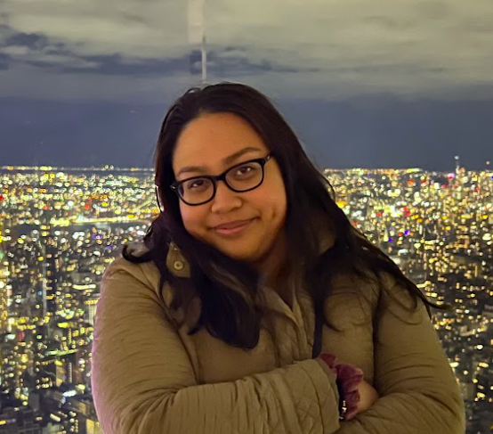

Welcome

Hello there and welcome to my website! My name is Angela Bonsol, 24 years old,
currently a Full Stack Developer with 2 years of professional experience.
Most proficient in Java and Javascript, but have experiences working with other
programming languages and technologies.
(See Resume)
My passion for technology is fueled by my enduring curiosity and dedication for continuous self-improvement and growth. I'm a critical thinker who values performance and efficiency in the workforce. I highly value teamwork and the achievement of common goals. I firmly believe that my success is closely tied to the success of my team and the company. This is why I'm determined to work harder to ensure our collective success, as it underscores the organization's strength.
While I believe in my own abilities, I recognize the importance of seeking help, being receptive to new ideas, and taking ownership of my own mistakes. I'm often recognized for my amiable and hardworking nature and excellence in active listening, adaptability, and exceptional organization. Beyond my professionalism, my creativity also shines in art, baking, and mixology. (See Hobbies)
From a young age, I have made it my life's mission to make a meaningful impact in the world someday. In the tech industry, especially as a woman, I've remained committed to this mission. I'm proud to say that every day, I'm making progress towards that change. I've dedicated myself to giving back in any way I can, whether through mentorship, student panels, or other opportunities. My previous leadership roles as President of Pace Women in Tech and Event Director at Sunflower Hack 2021 are just a few examples that also reflect this commitment. Even after graduation, I remain involved with Pace Women in Tech and actively engage in Women in Tech events, such as conferences and hackathons. It warms my heart to see more and more companies thriving in the advancement of gender diversity in technology.
As I continue to advance my career and develop my leadership skills, I aspire to become a Senior Developer, Tech Leader, Manager, and eventually a CTO, maybe even at my own company!
While my website is currently a simple HTML and CSS project hosted on Github, I have plans to enhance it in the near future. My visions include using React and AWS to create a scalable and flexible architecture, enabling the addition of exciting new features. Its current simplicity serves as the foundation for the endless possibilities I envision.
It is truly fascinating how technology is so adaptable and constant to evolution, continually making our life more efficient. There's always something new to learn, and I am excited to continue this journey of growth, learning, and connecting with like-minded individuals, sharing knowledge and gaining more insights along the way.
“The only thing constant in life is change”
My passion for technology is fueled by my enduring curiosity and dedication for continuous self-improvement and growth. I'm a critical thinker who values performance and efficiency in the workforce. I highly value teamwork and the achievement of common goals. I firmly believe that my success is closely tied to the success of my team and the company. This is why I'm determined to work harder to ensure our collective success, as it underscores the organization's strength.
While I believe in my own abilities, I recognize the importance of seeking help, being receptive to new ideas, and taking ownership of my own mistakes. I'm often recognized for my amiable and hardworking nature and excellence in active listening, adaptability, and exceptional organization. Beyond my professionalism, my creativity also shines in art, baking, and mixology. (See Hobbies)
From a young age, I have made it my life's mission to make a meaningful impact in the world someday. In the tech industry, especially as a woman, I've remained committed to this mission. I'm proud to say that every day, I'm making progress towards that change. I've dedicated myself to giving back in any way I can, whether through mentorship, student panels, or other opportunities. My previous leadership roles as President of Pace Women in Tech and Event Director at Sunflower Hack 2021 are just a few examples that also reflect this commitment. Even after graduation, I remain involved with Pace Women in Tech and actively engage in Women in Tech events, such as conferences and hackathons. It warms my heart to see more and more companies thriving in the advancement of gender diversity in technology.
As I continue to advance my career and develop my leadership skills, I aspire to become a Senior Developer, Tech Leader, Manager, and eventually a CTO, maybe even at my own company!
While my website is currently a simple HTML and CSS project hosted on Github, I have plans to enhance it in the near future. My visions include using React and AWS to create a scalable and flexible architecture, enabling the addition of exciting new features. Its current simplicity serves as the foundation for the endless possibilities I envision.
It is truly fascinating how technology is so adaptable and constant to evolution, continually making our life more efficient. There's always something new to learn, and I am excited to continue this journey of growth, learning, and connecting with like-minded individuals, sharing knowledge and gaining more insights along the way.
“The only thing constant in life is change”
Checkout some articles I'm featured in: